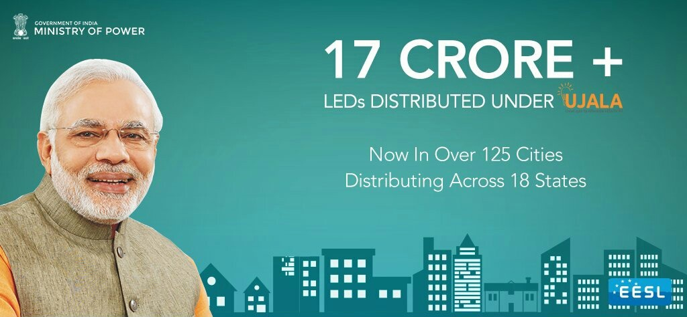

Aim to Change

Prakash Path : National LED Programme
Prakash Path : National LED Programme Prime Minister, Narendra Modi, in a step towards conserving the environment, has launched the Prakash Path (Way to Light), a National Programme for LED-based Home and Street Lighting. Under this scheme, the government is planning to replace 77 crore conventional bulbs and 3.5 crore conventional streetlights with the LED range. As per the Economic Survey 2015-16, this change will see a savings of Rs 45,500 crore by reducing 21,500 MW electricity demand. The Prime Minister replaced one bulb with an LED in the South Block in Delhi. Just replacing all the bulbs in the South Blcok with LED will result in the saving of 7000 units of energy per month.
Advantages of LED Bulbs
LED stands for light-emitting diode (LED). This specialized electronic component is assembled into a lamp or bulb for use in light fixtures. LED bulbs have the following advantages:
LED bulbs are energy efficient. As compared to the incandescent bulbs, LEDs consume up to 90% less power.
Lesser consumption of power also means lesser emission of CO2, and thus reduced carbon footprints.
Use of LED bulbs naturally is indicative of a dramatic decrease in power costs.
LED bulbs are long lasting. A single bulb may last as long as 20 years. Thus usage of the same also results in time-efficiency.
Money and energy is saved in maintenance and replacement costs due to the long LED lifespan.